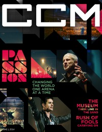
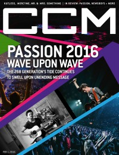

Passion BandOn the cover
1 June 2014
CCM Digital |

1 February 2016
CCM Digital | Media coverage- Mar 2004 in CCM "Something Old, Something New", by David Schrader
- Mar 2004 in Worship Leader "The Fine Art of Collaboration with Chris Tomlin"
- Jan 2006 in CCM "Our Love Is Loud: For His Name And Renown", by Louie Giglio
- Mar 2006 in Worship Leader "Table Talk: How to Dismantle an Atomic Song", by Andrew Philip
- Apr 2007 in Christianity Today "Passion Takes It Higher", by Collin Hansen
- Apr 2011 in Charisma "When Singing Isn't Enough"
- Jan 2012 in Relevant "Accidental Movement", by Tyler Charles
- May 2012 in CCM Digital "Worship: Passion: Victory Is Won", by Emily Durbin
- 1 Feb 2014 in CCM Digital "One Last Look: Highlights From Passion 2014 Atlanta", by Caroline Lusk
- 15 Feb 2014 in CCM Digital "Your World: And the Gift Goes On..."
- 1 Jun 2014 in CCM Digital "Passion: Changing the World One Arena at a Time", by Caroline Lusk
- 1 Feb 2016 in CCM Digital "Passion 2016 - Wave Upon Wave", by Kevin Sparkman
- 15 Jan 2017 in CCM Digital "Twenty Years of Passion", by Mark D. Geil
- May 2018 in Relevant "Reckless Passion", by Jesse Carey
Albums & reviews:1998: Passion '98: Live Worship From the 268 Generation 2000: The Road to One Day 2002: Our Love Is Loud: Live 2003: Sacred Revolution: Songs From One Day '03 2004: Hymns Ancient & Modern 2005: How Great Is Our God 2005: Live Worship From Passion '05 2006: Everything Glorious 2013: Let the Future Begin 2016: Salvation's Tide Is Rising 2017: Worthy Of Your Name 2019: Follow You Anywhere 2020: Hope Has A Name
2023: I've Witnessed It - Live From Passion
Award Summary (Nominations / Wins)
Dove Awards2001 Dove Awards- Praise & Worship Album: The Road to One Day
2003 Dove Awards2004 Dove Awards- Special Event Album: Sacred Revolution: Songs From One Day '03
2005 Dove Awards2006 Dove Awards- Special Event Album: How Great Is Our God
2007 Dove Awards- Special Event Album: Everything Glorious
2009 Dove Awards- Special Event Album: God of this City
2011 Dove Awards- Praise & Worship Album: Awakening
- Special Event Album: Awakening
2012 Dove Awards- Special Event Album: Here For You
2013 Dove Awards- Praise & Worship Album: Let the Future Begin
- Praise & Worship Album: White Flag
- Special Event Album: Let the Future Begin
- Special Event Album: White Flag
2014 Dove Awards- Praise & Worship Album: Take It All
- Special Event Album: Take It All
2015 Dove Awards2016 Dove Awards- Special Event Album: Salvation's Tide Is Rising
- Worship Song: "Even So Come"
2018 Dove Awards2020 Dove Awards- Long Form Video: Roar (Live)
2023 Dove Awards- Long Form Video: I've Witnessed It - Live From Passion
Grammy AwardsBooks about Passion Band
- "Passion" in The Encyclopedia of Contemporary Christian Music (Mark Allan Powell, 2002).
|